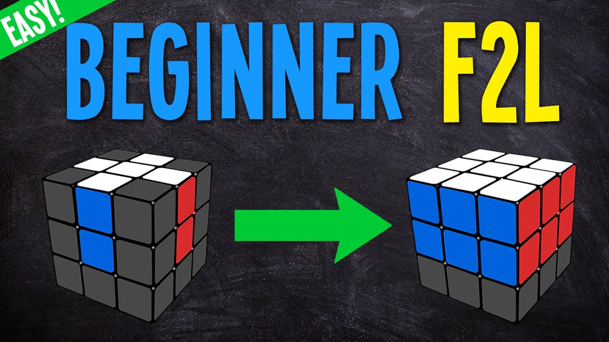
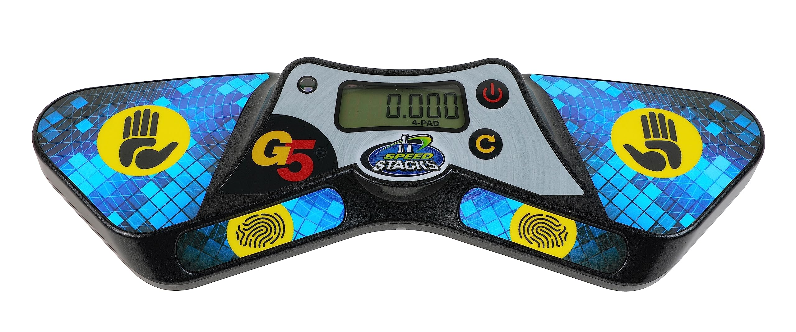

What is Speedcubing?

Speedcubing is a competitive puzzle-solving activity that involves solving a Rubik's Cube or similar twisty puzzles as quickly as possible. The goal is to arrange the cube's colored faces back into their original configuration, which is typically a solid color per face, with all the same colors on one side. Speedcubers use advanced solving techniques like "Roux" and "F2L" to achieve incredible speeds, and the world of speedcubing has evolved significantly over the years as more algorithms have been developed.
The history of speedcubing dates back to the 1980s when the Rubik's Cube first gained popularity. However, competitive speedcubing as we know it today started to take shape in the early 2000s. The World Cube Association (WCA), founded in 2004, standardized rules and regulations for cubing competitions worldwide. Some of the past winners and legendary figures in the sport include Feliks Zemdegs from Australia, who held numerous world records and is considered one of the greatest speedcubers of all time. Since September 2021, the speedcubing community was thriving, with frequent competitions held internationally and new records being set regularly. The sport continued to attract a diverse range of cubers, from beginners to seasoned professionals, and it's likely that the world of speedcubing has continued to grow and evolve since then.
How do I solve a Rubik's Cube?
Solving a Rubik's Cube efficiently often involves using advanced methods like CFOP (Cross, F2L, OLL, PLL), which is one of the most popular and widely practiced solving techniques among speedcubers. CFOP involves breaking down the solving process into several stages. The first stage, "Cross," focuses on solving a cross on one face, typically the white or yellow faces. The second stage involves creating first two layers (F2L) on the bottom of the cube. For beginners, the second stage is typically broken down into two steps, while more advanced solvers do it as one single step. This approach minimizes the number of moves needed to solve the cube and is a hallmark of CFOP.
In F2L (First Two Layers), cubers aim to pair up corner and edge pieces in such a way that they can be inserted into their correct positions in a single, efficient motion. This stage can be challenging, but there are some tips to improve your F2L speed and accuracy. First, practice recognizing and solving common F2L pairs, which can help you become more efficient in identifying patterns during solves. Second, try to avoid rotations as much as possible by planning your moves ahead and using the cube's flexibility to your advantage. Lastly, pay attention to lookahead, which means focusing on the next pair while solving the current one. This helps you maintain a smooth, continuous solve and can significantly reduce solving times. With consistent practice and attention to these tips, mastering F2L in the CFOP method can greatly enhance your Rubik's Cube-solving skills.
Where do I start?
Websites
- Speedsolving.com: This is one of the largest online communities for speedcubers, where you can find forums, tutorials, and discussions about all aspects of cubing.
- CubingUSA.org: The official website of the United States' cubing organization provides information on competitions, records, and resources for cubers in the USA.
- YouTube: YouTube is a treasure trove of speedcubing tutorials, solves, and reviews. Channels like J Perm, TheCubicle, and RedKB offer insightful content for beginners and advanced cubers alike.
Three Essential Products
- Speedcubes: Invest in a quality speedcube for better performance. Popular brands include GAN, MoYu, QiYi, and Valk.
- Lubricants: Lubricants can improve the turning speed and feel of your cube. Brands like Traxxas, Weight 1, and Silk are popular choices.
- Cube timers: Cube timers like the Stackmat timer can help you track your solving times accurately.
Other Resources
- "The Winning Solution" by Minh Thai: This book by Minh Thai, the first Rubik's Cube world champion, provides a comprehensive guide to solving the cube efficiently.
- Cube Timer Apps: Various mobile apps are available for tracking your solving times and analyzing your progress. Popular options include CSTimer, Twisty Timer, and ChaoTimer.
- Reddit - r/Cubers: The Cubers subreddit is a great place to connect with other cubers, seek advice, and share your progress.
Remember, speedcubing requires practice and patience, so don't be discouraged if you don't see immediate results. Explore these resources, practice regularly, and you'll gradually improve your solving skills!